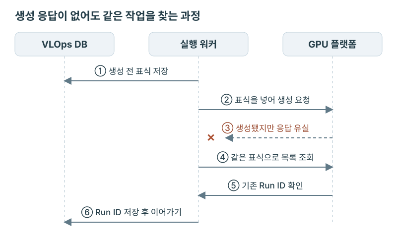

VLOPS · GPU 작업의 생성·재연결·자원 회수
GPU 작업 생성 응답을 잃었을 때, 다시 만들어도 될까
GPU 작업 생성 요청이 타임아웃됐을 때 가장 곤란한 점은 작업이 만들어졌는지 알 수 없다는 것이었다. 응답만 끊겼다면 GPU에서는 이미 모델을 로딩하고 있을 수 있었다. 이때 생성 API를 다시 호출하면 같은 작업이 하나 더 생긴다. VLOps에서는 생성 전에 ID를 발급해 DB와 원격 작업 양쪽에 남기고, 응답을 받지 못해도 이 ID로 기존 작업을 찾도록 구현했다.
GPU 작업은 있는데 Run ID가 없는 상태
NAVER Cloud에서 모델 서빙·평가 플랫폼인 VLOps를 개발했다. 모델 서버를 띄울 때는 외부 GPU 플랫폼에 Run 생성을 요청하고, 응답으로 받은 Run ID를 DB에 저장한 뒤 상태 조회와 종료에 사용했다. 원격 작업 생성과 DB 저장은 하나의 트랜잭션으로 처리할 수 없었다.
생성 응답을 잃거나 Run ID를 저장하기 전에 워커가 종료되면, GPU 작업은 존재하는데 VLOps는 그 ID를 모르는 상태가 됐다. Run ID는 응답을 받아야 알 수 있었으므로, 생성 요청 전에 발급할 수 있는 별도의 ID가 필요했다.
GPU 작업 생성 전에 저장한 ID
GPU API를 호출하기 전에 VLOps DB에 자원 레코드를 저장하고, 그 ID를 생성 요청에 넣었다. 작업 시도와 자원 레코드도 이때 연결했다. 같은 작업의 시작 처리가 다시 호출되면 이미 연결된 레코드를 읽어 같은 ID를 사용했다.
전용 Run API에는 이 ID를 메모와 환경 변수로 전달했다. 생성 응답을 받지 못해도 원격 작업 목록에서 같은 ID가 붙은 Run을 찾을 수 있었다. 원격 Run ID까지 DB에 저장된 경우에는 해당 Run을 바로 조회했다.

시작 코드는 DB에 Run ID가 있는지 먼저 확인하고, 없으면 VLOps 자원 ID를 표식으로 기존 작업을 검색했다. 둘 다 없을 때만 생성 API를 호출했다. 다만 호출 후 응답을 잃었다면 곧바로 다시 생성하지 않고, 제한 시간 동안 목록을 재조회했다.
일치하는 Run이 하나라면 ID를 저장해 계속 사용하고, 여러 개라면 충돌로 처리했다. 임의로 하나를 선택하면 나머지 작업이 관리에서 빠지기 때문이었다. 제한 시간까지 찾지 못한 경우에도 생성되지 않았다고 단정할 수 없어 시작 오류를 반환했다. 응답 유실 후 재조회하는 동안에는 생성 API를 다시 호출하지 않았다.
테스트에서는 가짜 GPU API 서버가 Run을 생성한 직후 오류 응답을 반환하게 했다. Adapter가 목록 조회로 원래 Run을 찾는지, 생성 API 호출 수와 원격 작업 수가 모두 1인지 확인했다. 별도로 Run ID 저장 전 워커 재시작을 모사해, VLOps 자원 ID만 복원한 새 객체로 시작 처리를 호출해도 기존 Run에 연결되는지 검사했다.
제한 시간까지 표식이 나타나지 않는 테스트도 추가했다. 이 경우에는 시작 오류를 반환하되 생성 API 호출 수가 1로 유지돼야 했다. 조회에 실패했다고 생성 요청까지 반복하지 않는지 확인하기 위한 테스트였다.
이 방식은 원격 API가 표식을 저장하고 목록 조회에서 반환해야 사용할 수 있었다. 표식 조회와 생성은 원자적이지 않아, 이 방식만으로 동시 생성 요청까지 막을 수는 없었다.
요청 접수와 Workflow 시작의 중복 방지
중복은 GPU 생성 단계에서만 생기지 않았다. 사용자가 평가 제출 응답을 받지 못해 재요청하거나, VLOps가 Temporal 시작 응답을 잃는 경우도 있었다. 이 단계에서 실행이 두 개 만들어지면 각각 다른 자원 ID로 GPU 작업을 생성할 수 있으므로, 요청 접수와 Workflow 시작에도 별도의 중복 방지가 필요했다.
| 경계 | 확인할 대상 | 처리 기준 |
|---|---|---|
| 평가 요청 접수 | 같은 제출을 반복했는가 | 요청 ID와 내용의 fingerprint |
| Temporal 시작 | 해당 실행의 Workflow가 이미 시작됐는가 | VLOps 실행 ID에서 정한 고정 Workflow ID |
| GPU 작업 생성 | 원격 Run이 이미 만들어졌는가 | 저장된 Run ID, 없으면 생성 전 식별 표식 |
평가 접수 시에는 요청 ID와 fingerprint를 저장했다. 같은 ID와 같은 내용이면 기존 실행을 반환하고, 같은 ID로 내용을 바꾸면 충돌로 거절했다. 내용이 같더라도 요청 ID가 다르면 사용자가 새 평가를 요청한 것으로 처리했다.
DB에 실행·작업 레코드를 먼저 저장한 뒤 Temporal Workflow를 시작했다. 시작 요청이 실패해도 레코드는 남겨, 같은 요청이 다시 들어오면 기존 실행 ID를 사용하도록 했다. Temporal Workflow ID도 이 실행 ID를 기준으로 고정하고 ID 재사용을 거절하도록 설정했다. 따라서 이미 시작됐다는 응답을 받으면 기존 Workflow를 사용했다. 연결 오류로 시작 여부를 확인하지 못한 경우에는 접수 완료로 응답하지 않고, 같은 요청으로 재시도할 수 있게 했다.
접수 테스트에서는 클라이언트가 응답을 잃고 재요청해도 실행·작업 레코드가 각각 하나이고 Workflow 시작도 한 번인지 확인했다. Temporal 시작이 실패했다가 복구된 경우에도 같은 요청으로 처음 발급한 실행 ID를 사용하는지 검사했다. 접수 과정에서는 GPU API를 호출하지 않고, 이후 Workflow 실행에서 생성하도록 했다.
워커 재시작 후에도 같은 원격 Run으로
Run ID를 저장한 뒤 워커가 재시작했다면 DB에서 이 ID를 읽어 원격 상태를 다시 조회했다. 워커가 종료돼도 GPU 작업은 계속 실행될 수 있으므로, 시작 Activity가 재실행된다는 이유로 새 Run을 만들면 안 됐다.
상태와 접속 정보는 원격 조회 결과로 갱신하고, 사용할 GPU 환경의 설정은 해당 실행의 정의 버전에서 읽었다. 그동안 최신 정의가 바뀌었더라도 기존 Run을 조회·종료할 때는 생성 당시의 환경을 사용해야 했다.
테스트에서는 서비스 객체를 새로 만든 뒤 자원 ID만 전달했다. DB의 작업·실행·정의 버전을 조회해 원래 환경을 복원하고, 그 환경에서 자원을 조회하고 종료하는지 확인했다. 최신 정의의 환경 설정을 바꿔도 기존 자원에는 영향을 주지 않아야 했다.
Temporal은 Activity를 재실행할 수 있지만, 이전 호출에서 생성한 GPU 작업까지 찾아주지는 않았다. VLOps가 DB의 Run ID와 생성 전 표식을 관리하고 Adapter에서 원격 상태를 다시 확인해야, Workflow를 재개하면서 기존 GPU 작업을 계속 사용할 수 있었다.
종료 요청과 회수 완료 사이
종료 API도 호출 성공만으로 회수 완료를 기록할 수는 없었다. GPU 플랫폼이 요청을 받은 뒤에도 Run이 한동안 종료 중일 수 있고, 그 사이 워커가 재시작할 수도 있었다. 그래서 API 호출 전에 DB에 회수 대상으로 기록하고, 원격 종료를 확인한 뒤에만 회수 완료 시각을 저장했다.
회수 코드는 매번 Run의 상태를 조회했다. 실행 중이면 종료를 요청하고 미완료를 반환해 다음 호출에서 다시 확인하도록 했다. Run이 종료 상태이거나 더 이상 존재하지 않을 때만 회수를 완료했다.
조회나 종료 호출에 오류가 나더라도 DB에는 회수 대상으로 남고 완료 시각은 비어 있도록 했다. 회수 Activity는 DB에 남은 상태를 읽어 처리를 재개하고, 이미 완료 시각이 저장돼 있으면 원격 API를 호출하지 않았다.
테스트용 provider는 처음 두 번의 회수 호출에는 미완료를, 세 번째에만 완료를 반환하도록 했다. 두 번째 호출까지는 DB에 회수 대상으로 남아 있고 완료 시각은 비어 있는지, 세 번째에서만 완료 시각이 채워지는지 확인했다. provider 호출 전에 DB 저장이 끝났는지도 매번 검사했다. 호출 도중 워커가 종료되더라도 재시작 후 어떤 자원을 정리해야 하는지 알 수 있어야 했기 때문이다.
자동 회수와 수동 회수의 호출을 교차시키는 테스트도 수행했다. 첫 호출은 종료를 요청하고 다음 호출은 종료를 확인했으며, 이후 다시 회수해도 완료 시각이 바뀌거나 원격 API 호출이 추가되지 않는지 검사했다.